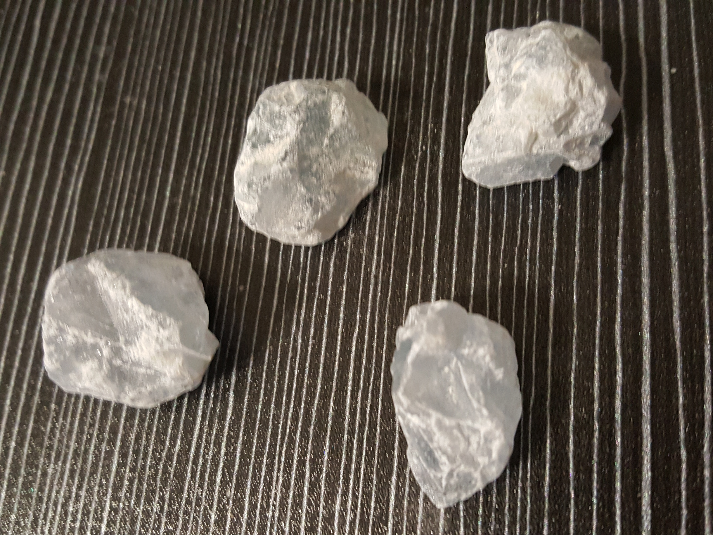
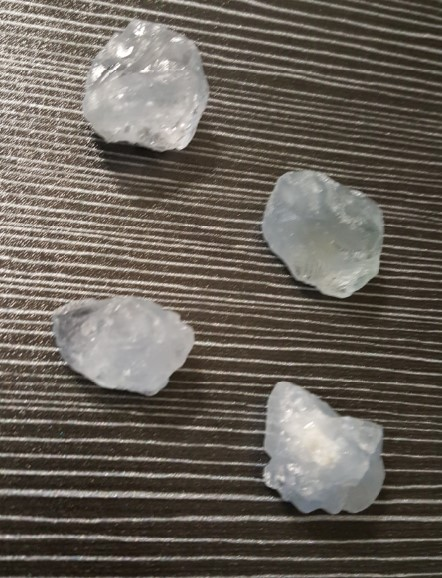
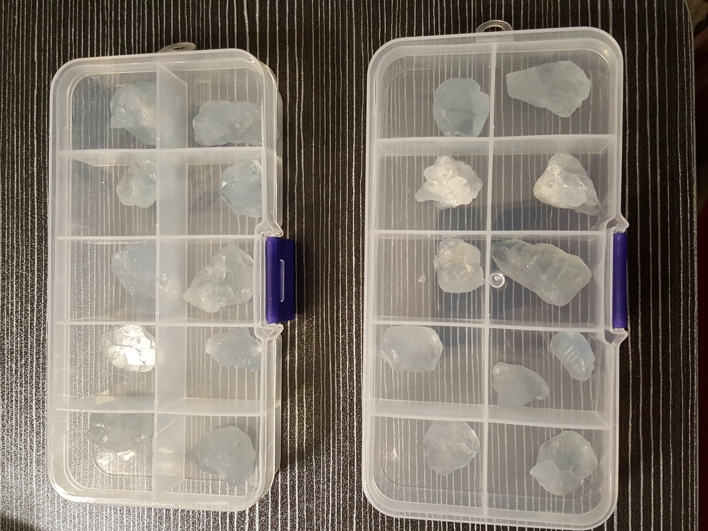
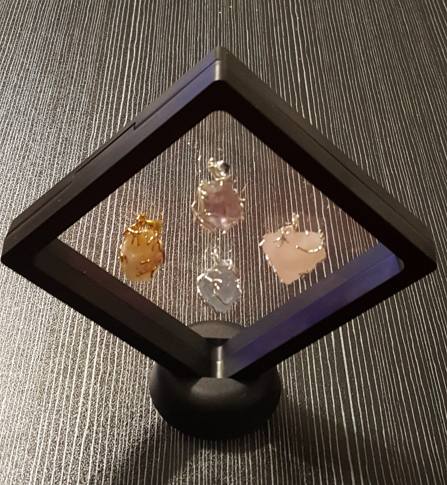

I Cristalli di
GiobaR
✨ Ogni cristallo che arriva tra le nostre mani ha una storia scritta nella pietra.
Dalla scoperta nel greto del fiume o nelle terre lontane, fino alla sua trasformazione in un gioiello o in un pezzo da collezione.
Non usiamo macchinari industriali né processi aggressivi: la nostra è una lavorazione artigianale, paziente e rispettosa, che accompagna la gemma a rivelare la sua essenza più autentica.
Qui vi mostriamo l’esempio della Celestite – pietra fragile e dal colore etereo – attraverso le fasi che abbiamo vissuto con lei.




🔨 Non cerchiamo la perfezione meccanica, ma l'anima della pietra.
Ogni crepa, ogni venatura, ogni nuance di colore è unica. Ci vuole tempo, cura e tanta passione per trasformare un semplice frammento di roccia in un piccolo scrigno di luce.
È così che un cristallo grezzo diventa un amuleto, un regalo della Terra che qualcuno porterà con sé.